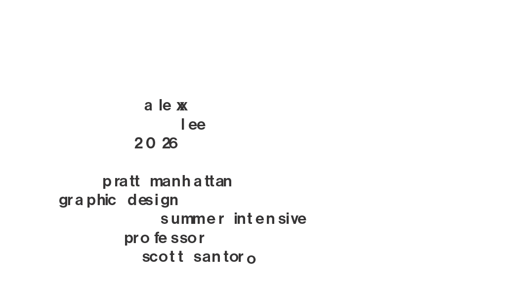

Design Intensive Portfolio
Open in a new tab
A 6-page portfolio of works I designed in the Pratt Institute's 4 week Graphic Design Summer Intensive program. The irregular letter spacing is designed to create visual movement, inspired by works by Ed Fella.
Made with Adobe Indesign. Individual works made in Adobe Illustrator, Photoshop, and Indesign.